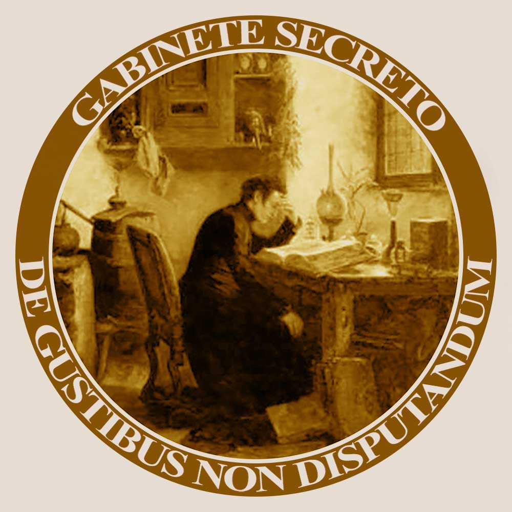

Bienvenido a esta biblioteca virtual donde presento algunos trabajos propios y traducciones de otros autores. El nombre del sitio está inspirado en el
Gabinetto Segreto; una sala del Museo de Nápoles creada en 1819 para esconder de la vista del público un conjunto de
piezas eróticas extraídas de Pompeya y Herculano; las ciudades tapadas por las cenizas del volcán Vesubio en el año 79. Con igual celo muchas bibliotecas del mundo guardaron durante siglos ciertos libros en un lugar al que llamaron
Infierno, permitiendo el acceso únicamente a caballeros de reconocida solvencia moral; ¡Vaya uno a saber en qué criterios se basaban para determinar esa
cualidad !. Libros como
El matrimonio perfecto, del Dr. Th. H. Van de Velde ocuparon un lugar en la lista de libros prohibidos por la Iglesia católica denominada
Index Librorum Prohibitorum. Podemos estar seguros de que todos los reseñados en la página del
Gabinete estarían ahí, si ese Index siguiera vigente.
De todos modos, no se hallará nada pornográfico en esta pequeña biblioteca virtual, solo breves reseñas de esos libros científicos y sus autores. He traducido las
Obras Completas de Havelock Ellis (1859-1939), 32 tomos de su autoría sobre los más diversos asuntos de su época, más una obra de su esposa y una biografía de Ellis por Isaac Goldberg.

Este sello que identifica cada trabajo a modo de un ex-libris, está basado en la pintura de Karl Joseph Litschauer,(1830-1871)-
The student of chemistry and pharmacy; una manera de expresar mi fascinación por esa ciencia que tuvo sus inicios con la alquimia y con la magia. El lema en latín significa:
"Sobre gustos no se discute".